Extremal Combinatorics in Julia
Daniel Brosch
University of Klagenfurt
ÖMG Tagung, Graz, September 19, 2023
Software: FlagSOS.jl
github.com/DanielBrosch/FlagSOS.jlA Julia package for extremal combinatorics with $S_n$ or $S_\infty$ symmetry. In active development for various projects involving

Tilburg University

University of Klagenfurt

Uppsala University

Georgia Tech

TU Clausthal
Extremal graph theory
We are interested in limit objects of sequences of graphs $$ \mathcal{G} = (G_i)_{i\geq 0},$$ where $G_i$ is a graph on $i$ vertices.How many edges can there be in a triangle free graph?
Graphons (Graph-functions)
[Lovász, Szegedy, 2006]

Flag Algebras
[Razborov, 2007]

Subgraph densities
We define the (non-induced) density of a finite graph $\color{darkorange}H$ in $\mathcal{G}$ as $$\phi_{\mathcal{G}}({\color{darkorange}H}):= \lim_{i\to\infty} \text{density of $\color{darkorange}H$ in $G_i$}$$$$=\lim_{i\to\infty} \mathbb{P}[{\color{green}\sigma_i}({\color{darkorange}H}) \text{ is a subgraph of }G_i ],$$ where ${\color{green}\sigma_i}\colon V({\color{darkorange}H})\to V(G_i)$ is a random injective mapping.
Triangle free graphs
Maximize the edge density in a triangle free sequence $\mathcal{G}$ of graphs of increasing size:
We saw that
but how can we prove an upper bound?
Multiplying subgraph densities
To multiply two subgraph densities, we glue together the graphs:

These relationships are independent of $\mathcal{G}$, motivating the definition

where a graph $H$ now stands for the function $$\small H(\mathcal{G}) = \phi_{\mathcal{G}}(H)= \lim_{i\to\infty} \mathbb{P}[\sigma_i(H) \text{ is a subgraph of }G_i].$$
We can fix entries of the $\sigma_i$ to fix (flag) some vertices, and extend the gluing operation to partially labeled graphs (flags):
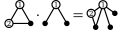Flag Sums-of-Squares
- Flags $F$ send graph sequences to real numbers: $$ F (\mathcal{G}) \in [0,1]$$
-
Then so do real linear combinations of flags
The literature calls these Quantum graphs. -
Squares of real numbers are nonnegative:
We can average flags over all choices of labels, unlabeling them:
We can now find an upper bound for the edge density in triangle free graphs:
As with polynomial optimization, we can model Flag-SOS using semidefinite programming.
Polynomial Sums-of-Squares
- Let ${\color{darkorange}[x]} = (m_1,\ldots, m_k)^\top$ be a vector containing a finite subset of a basis of $\mathbb{R}{\color{darkorange}[x]}$.
Polynomial Sums-of-Squares
- Let ${\color{darkorange}[x]} = (m_1,\ldots, m_k)^\top$ be a vector containing a finite subset of a basis of $\mathbb{R}{\color{darkorange}[x]}$.
- We can write polynomials in the form $$\small p = \sum_{i=1}^k c_i m_i = c^\top{\color{darkorange}[x]}$$
Polynomial Sums-of-Squares
- Let ${\color{darkorange}[x]} = (m_1,\ldots, m_k)^\top$ be a vector containing a finite subset of a basis of $\mathbb{R}{\color{darkorange}[x]}$.
- We can write polynomials in the form $$\small p = \sum_{i=1}^k c_i m_i = c^\top{\color{darkorange}[x]}$$
- And squares as $$\small p^2 = (c^\top{\color{darkorange}[x]})^2 = {\color{darkorange}[x]}^\top (cc^\top) {\color{darkorange}[x]} = \langle c c^\top, {\color{darkorange}[x]}{\color{darkorange}[x]}^\top\rangle$$
Polynomial Sums-of-Squares
- And squares as $$\small p^2 = (c^\top{\color{darkorange}[x]})^2 = {\color{darkorange}[x]}^\top (cc^\top) {\color{darkorange}[x]} = \langle c c^\top, {\color{darkorange}[x]}{\color{darkorange}[x]}^\top\rangle$$
- Sums-of-squares correspond to PSD matrices: $$\small \sum p_i^2 = \left\langle \sum c_ic_i^\top, {\color{darkorange}[x]}{\color{darkorange}[x]}^\top\right\rangle =\left\langle M, {\color{darkorange}[x]}{\color{darkorange}[x]}^\top\right\rangle,$$ for some $M \in \mathbb{S}^n_+$.
Flag Sums-of-Squares
- Let ${\color{darkorange}\mathcal{F}}$ be a (finite) vector of flags.
Flag Sums-of-Squares
- Let ${\color{darkorange}\mathcal{F}}$ be a (finite) vector of flags.
- Linear combinations of flags are of the form $$f = c^\top {\color{darkorange}\mathcal{F}}.$$
Flag Sums-of-Squares
- Let ${\color{darkorange}\mathcal{F}}$ be a (finite) vector of flags.
- Linear combinations of flags are of the form $$f = c^\top {\color{darkorange}\mathcal{F}}.$$
- Unlabelled squares can be written as $$[\![f^2]\!]=\left\langle cc^\top, [\![{\color{darkorange}\mathcal{F}}{\color{darkorange}\mathcal{F}}^\top]\!]\right\rangle$$
Flag Sums-of-Squares
- Linear combinations of flags are of the form $$f = c^\top {\color{darkorange}\mathcal{F}}.$$
- Unlabelled squares can be written as $$[\![f^2]\!]=\left\langle cc^\top, [\![{\color{darkorange}\mathcal{F}}{\color{darkorange}\mathcal{F}}^\top]\!]\right\rangle$$
- Flag sums-of-squares are of the form $$\left\langle M, [\![{\color{darkorange}\mathcal{F}}{\color{darkorange}\mathcal{F}}^\top]\!]\right\rangle$$ for positive semidefinite matrices $M$.
Flag Sums-of-Squares
- Flag sums-of-squares are of the form $$\left\langle M, [\![{\color{darkorange}\mathcal{F}}{\color{darkorange}\mathcal{F}}^\top]\!]\right\rangle$$ for positive semidefinite matrices $M$.
In practice: Use "smarter" hierarchies, block diagonalized by combinatorial ideas and/or symmetries.
Graph profiles
We saw that triangle free graphs have at most edge density $\frac{1}{2}$.
What happens if we allow some triangles?

Investigating nonnegativity
Let $p=a_1 G_1 + a_2 G_2 + \ldots + a_k G_k$ be a linear combination of unlabeled graphs.[Lovász, Szegedy 2009]:
If $p\geq 0$, then $p + \varepsilon$ is a SOS for any $\varepsilon > 0$.
[Hatami, Norin, 2011]:
The question "Does $p \geq 0$ hold?"
is undecidable.
Software: FlagSOS.jl
github.com/DanielBrosch/FlagSOS.jlA Julia package for extremal combinatorics with $S_n$ or $S_\infty$ symmetry.
Razborov's flag algebras
Razborov worked in the setting of first order model theory.And yet all existing software focuses on specific flag algebras.
FlagSOS.jl is designed to be easily extendable to new theories.
Currently implemented theories
- Graphs,
- Directed graphs,
- Hypergraphs,
- Symmetric functions,
- Constant weight codes,
- Phylogenetic rooted binary trees,
- Colored, (partially) labeled, and induced variants.
New theories can be added by definining a few simple black-box functions. The package provides functions to canonically label and generate models up to isomorphism.
Supported problem types
$$ \begin{align*} \inf_M\enspace & F(M)\\ \text{s.t. }& G_i(M) \geq 0 \quad\text{ for }i=1,\dots,k,\\ & H_i(M) = 0 \quad\text{ for }i = 1,\dots, \ell, \end{align*} $$ where $F$,$G_i$, $H_i$ are quantum flags, and $M$ is a model of fixed size or a converging sequence.The constraints can include labels, but then the entire $S_n$ orbit needs to be included.
Available hierarchies
-
Lasserre hierarchy:
For problems formulated in sparse, large models. Based on polynomial optimization, representation theory and consistent sequences. -
Razborov hierarchy:
For problems formulated in small, dense models. Based on Möbius transforms of finite lattices. Also implemented in Vaughan's Flagmatic (2011).
Planned: Sums-of-binomial-squares, entropy based optimization
Installation
pkg> add "https://github.com/DanielBrosch/FlagSOS.jl"
pkg> add FlagSOS
Examples:
danielbrosch.com/FlagSOS.jlAdvanced example: Extremal tree theory
Let $\mathcal{T} = (T_i)_{i\geq 0}$ be a sequence of trees, where $T_i$ has $i$ vertices.Let $\color{darkorange}S$ be a finite tree.
$$\phi_{\mathcal{T}}({\color{darkorange}S}):=\lim_{i\to\infty} \mathbb{P}[{\color{green}\sigma_i}({\color{darkorange}S}) \text{ is a subtree of }T_i ] {\color{red}=0}.$$
All subtree densities are $0$.
A change of perspective
[Czabarka, Székely, Wagner, 2017]
What happens, if we only consider the leaves of trees to be the "vertices" of the tree?

(Inner vertices are now part of the "edges" of the tree.)
A change of perspective
[Czabarka, Székely, Wagner, 2017]
Motivation: phylogenetic trees, tanglegrams
Subtrees
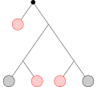Subtrees
$$\longrightarrow$$
Subtrees
$$\longrightarrow$$
Subtrees
$$\longrightarrow$$

Subtree densities
Let $\mathcal{T} = (T_i)_{i\geq 0}$ be a sequence of trees, where $T_i$ has $i$ leaves.
Let $\color{darkorange}S$ be a finite tree.
$$\phi_{\mathcal{T}}({\color{darkorange}S}):=\lim_{i\to\infty}
\mathbb{P}[\left.(T_i)\right|_{ {\color{green}V_i}} \cong {\color{darkorange}S}],$$
where $\color{green}V_i$ is a random subset of leaves of $T_i$ of size $V({\color{darkorange}S})$.
Questions
-
What are the inducibilities of trees?
Inducibility of $S= \mathrm{Ind}(S) :=\max_\mathcal{T}\phi_\mathcal{T}(S)$
Various upper and lower bounds by Wagner et al. -
Are profiles of trees convex?
Open!
The flag algebra of binary rooted trees
 $\equiv 1$
$\equiv 1$
Products of subtree densities
Inducibility of small trees
$\mathrm{Ind}\bigg($
 $\bigg)\leq 1.0$
$\bigg)\leq 1.0$$\mathrm{Ind}\bigg($
 $\bigg)\leq 1.0$
$\bigg)\leq 1.0$$\mathrm{Ind}\bigg($
 $\bigg)\leq 1.0$
$\bigg)\leq 1.0$$\mathrm{Ind}\bigg($
 $\bigg)\leq 0.42857$
$\bigg)\leq 0.42857$$\mathrm{Ind}\bigg($
 $\bigg)\leq 1.0$
$\bigg)\leq 1.0$$\mathrm{Ind}\bigg($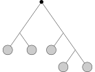 $\bigg)\leq 0.66667$
$\mathrm{Ind}\bigg($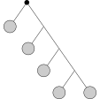 $\bigg)\leq 1.0$
$\mathrm{Ind}\bigg($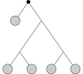 $\bigg)\leq 0.24718$
$\mathrm{Ind}\bigg($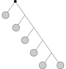 $\bigg)\leq 1.0$
$\mathrm{Ind}\bigg($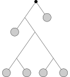 $\bigg)\leq 0.19166$
$\mathrm{Ind}\bigg($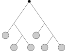 $\bigg)\leq 0.32258$
$\mathrm{Ind}\bigg($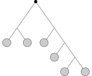 $\bigg)\leq 0.46875$
$\mathrm{Ind}\bigg($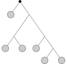 $\bigg)\leq 0.34121$
$\mathrm{Ind}\bigg($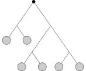 $\bigg)\leq 0.20738$
$\mathrm{Ind}\bigg($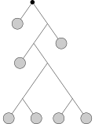 $\bigg)\leq 0.16972$
$\mathrm{Ind}\bigg($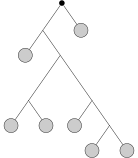 $\bigg)\leq 0.25593$
$\mathrm{Ind}\bigg($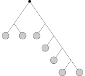 $\bigg)\leq 0.34568$
$\mathrm{Ind}\bigg($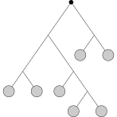 $\bigg)\leq 0.24722$
$\mathrm{Ind}\bigg($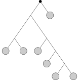 $\bigg)\leq 0.20864$
$\mathrm{Ind}\bigg($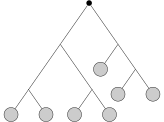 $\bigg)\leq 0.2381$
$\mathrm{Ind}\bigg($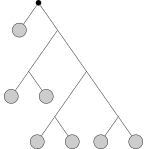 $\bigg)\leq 0.10488$
$\mathrm{Ind}\bigg($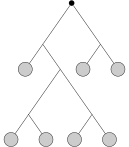 $\bigg)\leq 0.08879$
$\mathrm{Ind}\bigg($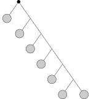 $\bigg)\leq 1.0$
$\mathrm{Ind}\bigg($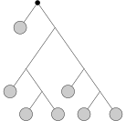 $\bigg)\leq 0.14409$
$\mathrm{Ind}\bigg($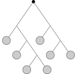 $\bigg)\leq 0.54688$
$\mathrm{Ind}\bigg($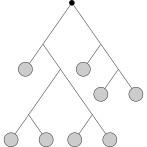 $\bigg)\leq 0.10891$
$\mathrm{Ind}\bigg($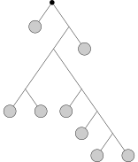 $\bigg)\leq 0.15392$
$\mathrm{Ind}\bigg($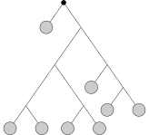 $\bigg)\leq 0.10069$
$\mathrm{Ind}\bigg($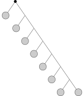 $\bigg)\leq 1.0$
$\mathrm{Ind}\bigg($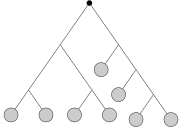 $\bigg)\leq 0.13499$
$\mathrm{Ind}\bigg($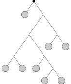 $\bigg)\leq 0.13142$
$\mathrm{Ind}\bigg($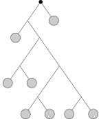 $\bigg)\leq 0.07846$
$\mathrm{Ind}\bigg($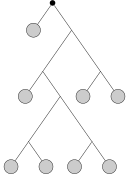 $\bigg)\leq 0.04778$
$\mathrm{Ind}\bigg($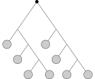 $\bigg)\leq 0.27344$
$\mathrm{Ind}\bigg($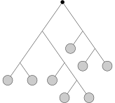 $\bigg)\leq 0.29397$
$\mathrm{Ind}\bigg($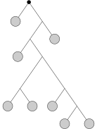 $\bigg)\leq 0.22385$
$\mathrm{Ind}\bigg($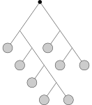 $\bigg)\leq 0.4375$
$\mathrm{Ind}\bigg($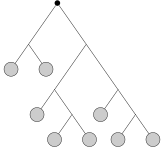 $\bigg)\leq 0.10921$
$\mathrm{Ind}\bigg($ $\bigg)\leq 0.05062$
$\mathrm{Ind}\bigg($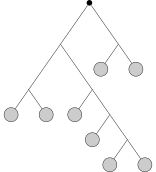 $\bigg)\leq 0.14794$
$\mathrm{Ind}\bigg($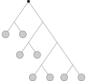 $\bigg)\leq 0.07021$
$\mathrm{Ind}\bigg($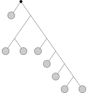 $\bigg)\leq 0.15873$
$\mathrm{Ind}\bigg($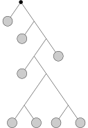 $\bigg)\leq 0.15785$
$\mathrm{Ind}\bigg($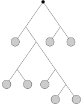 $\bigg)\leq 0.11242$
$\mathrm{Ind}\bigg($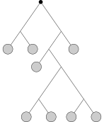 $\bigg)\leq 0.0618$
$\mathrm{Ind}\bigg($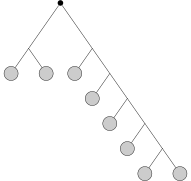 $\bigg)\leq 0.3156$
$\mathrm{Ind}\bigg($ $\bigg)\leq 0.1106$
$\mathrm{Ind}\bigg($ $\bigg)\leq 0.21818$
$\mathrm{Ind}\bigg($ $\bigg)\leq 0.07672$
$\mathrm{Ind}\bigg($ $\bigg)\leq 0.05459$
$\mathrm{Ind}\bigg($ $\bigg)\leq 0.32813$
$\mathrm{Ind}\bigg($ $\bigg)\leq 0.07269$
$\mathrm{Ind}\bigg($ $\bigg)\leq 0.16773$
$\mathrm{Ind}\bigg($ $\bigg)\leq 0.14118$
$\mathrm{Ind}\bigg($ $\bigg)\leq 0.03742$
$\mathrm{Ind}\bigg($ $\bigg)\leq 0.06838$
$\mathrm{Ind}\bigg($ $\bigg)\leq 0.0546$
$\mathrm{Ind}\bigg($ $\bigg)\leq 0.06361$
$\mathrm{Ind}\bigg($ $\bigg)\leq 0.06572$
$\mathrm{Ind}\bigg($ $\bigg)\leq 0.06916$
$\mathrm{Ind}\bigg($ $\bigg)\leq 0.09701$
$\mathrm{Ind}\bigg($ $\bigg)\leq 0.10656$
$\mathrm{Ind}\bigg($ $\bigg)\leq 0.05395$
$\mathrm{Ind}\bigg($ $\bigg)\leq 0.1674$
$\mathrm{Ind}\bigg($ $\bigg)\leq 0.30674$
$\mathrm{Ind}\bigg($ $\bigg)\leq 0.15159$
$\mathrm{Ind}\bigg($ $\bigg)\leq 0.04657$
$\mathrm{Ind}\bigg($ $\bigg)\leq 0.19236$
$\mathrm{Ind}\bigg($ $\bigg)\leq 0.15381$
$\mathrm{Ind}\bigg($ $\bigg)\leq 0.10694$
$\mathrm{Ind}\bigg($ $\bigg)\leq 0.03393$
$\mathrm{Ind}\bigg($ $\bigg)\leq 0.09637$
$\mathrm{Ind}\bigg($ $\bigg)\leq 0.02046$
$\mathrm{Ind}\bigg($ $\bigg)\leq 0.08361$
$\mathrm{Ind}\bigg($ $\bigg)\leq 0.03807$
$\mathrm{Ind}\bigg($ $\bigg)\leq 0.12347$
$\mathrm{Ind}\bigg($ $\bigg)\leq 0.11441$
$\mathrm{Ind}\bigg($ $\bigg)\leq 0.49219$
$\mathrm{Ind}\bigg($ $\bigg)\leq 0.07703$
$\mathrm{Ind}\bigg($ $\bigg)\leq 0.20609$
$\mathrm{Ind}\bigg($ $\bigg)\leq 0.09881$
$\mathrm{Ind}\bigg($ $\bigg)\leq 0.15142$
$\mathrm{Ind}\bigg($ $\bigg)\leq 0.11154$
$\mathrm{Ind}\bigg($ $\bigg)\leq 0.13361$
$\mathrm{Ind}\bigg($ $\bigg)\leq 0.0417$
$\mathrm{Ind}\bigg($ $\bigg)\leq 0.06798$
$\mathrm{Ind}\bigg($ $\bigg)\leq 1.0$
$\mathrm{Ind}\bigg($ $\bigg)\leq 0.03665$
$\mathrm{Ind}\bigg($ $\bigg)\leq 0.03196$
$\mathrm{Ind}\bigg($ $\bigg)\leq 0.12142$
$\mathrm{Ind}\bigg($ $\bigg)\leq 0.17236$
$\mathrm{Ind}\bigg($ $\bigg)\leq 0.04644$
$\mathrm{Ind}\bigg($ $\bigg)\leq 0.10636$
Irrational inducibility?
[Dossou-Olory, Wagner, 2019]:$0.247071\leq\mathrm{Ind}\bigg($ $\bigg)\leq 0.24745$
Irrational inducibility?
[Dossou-Olory, Wagner, 2019]:$0.247071\leq\mathrm{Ind}\bigg($ $\bigg)\leq{\color{red} 0.24718}\leq 0.24745$
Outer approximation of tree profiles
Outer approximation of tree profiles
For ${\color{darkorange}S}=$ and ${\color{green}T}=$ :Outer approximation of tree profiles
To-Do's
- Finish any of the projects the software is used in.
- Documentation needs work.
- Automatic generation of exacty rational certificates.
- More model theories, hierarchies?
For details (for now): Check out my thesis!